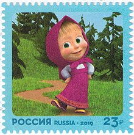
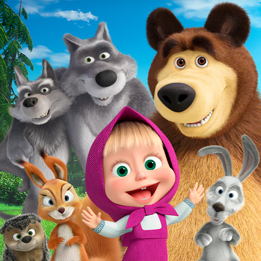

👧 Маша и мечока 🐻
„Маша и мечока (на руски: Ма́ша и Медве́дь) е руски анимационен сериал, създаден от анимационното студио „Анимаккорд“, насочен към широката публика. Шоуто стартира на 7 януари 2009 г. Карикатурата е създадена с помощта на триизмерна графика.
Идеята за проекта е измислена от аниматора Олег Кузовков през 1996 г. Той видя момиче на плажа, чието поведение бива подобно на героя от анимационния филм Маша. Кузовков се е вдъхновил и от анимационния сериал „Том и Джери“. Идеята на сюжета е базирана на едноименната руска народна приказка „Маша и мечока“.
През 2011 г. излиза първият спиноф, озаглавен „Приказките на Маша“, състоящ се от 26 епизода, базирани на руски народни приказки. През 2014 г. е пуснат втори спиноф под името „Страшните истории на Маша“

Герои
- Маша (Маричка) е неспокойно момиченце. Приятелката на мечока. ученичка. Палава. Харесва близалки, сладкиши, игра с награди и чаши Мечета, игра с топка, скачане в кофа, гледане на анимационни филми, задаване на въпроси, разказване на истории.
- Мечокът е най-добрия приятел на Маша, наричан от нея „Миша“, „Мишка“. Трудолюбив. Не говори, бивш цирков артист, пенсионер. Влюбен в Беър. Постоянно страда от пакостите на Маша.
- Беър е любовта на Мечока и вторият женски герой.
- Заекът е приятел на Маша и Мечока. Често страда от машинни пакости. Понякога копае в градината заедно с Мечока, но най-често краде моркови оттам.
- Вълците са забавни герои, те страдат от Маша по-често, отколкото излизат победители. В гората има лекари.
- Катерица – Замеря Маша с шишарки.
- Таралеж – Той рядко участва в шегите на Маша, не му харесва, когато Маша разваля гъбите и горските му плодове.
- Панда е племенник на Беър. Съперник на Маша за Мечоковото внимание.
- Домашни любимци на Маша са коза, кокошки, петел, прасе и куче, които живеят в двора на къщата на Маша и се крият от нея навсякъде, понеже тя ги тормози с игрите си. Пиленца и Петел се срещат само в разказа „Първата среща“.
- Тигър е старият приятел на Мечока от цирка.
- Пингвинът е осиновен син на Мечока. Той му бива хвърлен докато е още яйце и по-късно отгледан от Маша и Мечока, а след това изпратен у дома в Антарктида със самолет. Много обича Мечока и го нарича татко.
- Дядо Коледа е малък дядо, малко по-висок от Маша.
- Хималайската мечка е решителна, късметлийка, физически развита, истински мачо.
- Пчелите са ядосани и агресивни. В поредицата „Снимка 9 на 12“ са представени много забавни.
- Даша е сестрата на Маша. Появява се в сериала „Двама за един“.
- Момичето Чукчи е точно копие на Маша. Различава се от нея по черната коса. Живее на Северния полюс.

🐇 Интересно видео за Мики Маус